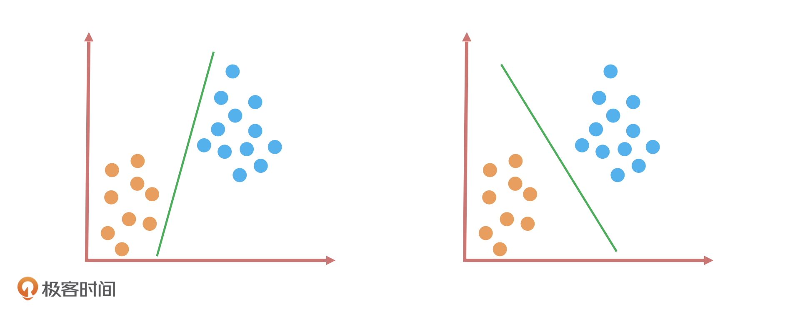
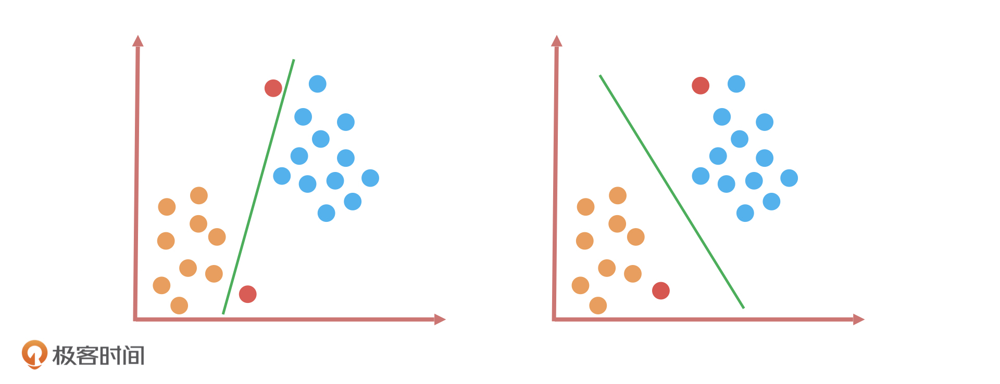
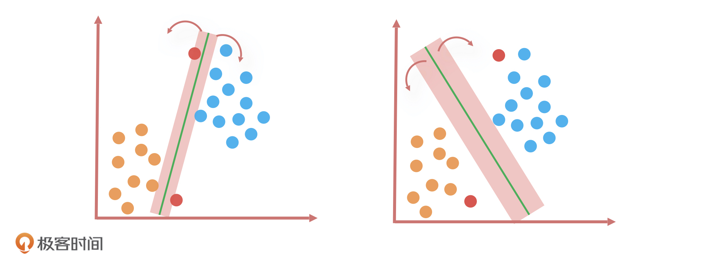
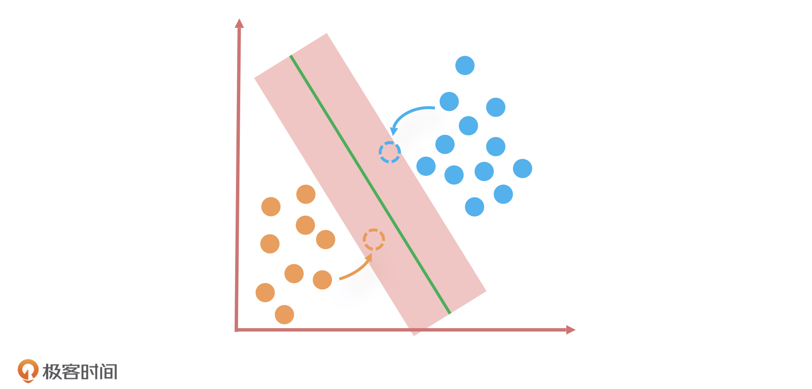
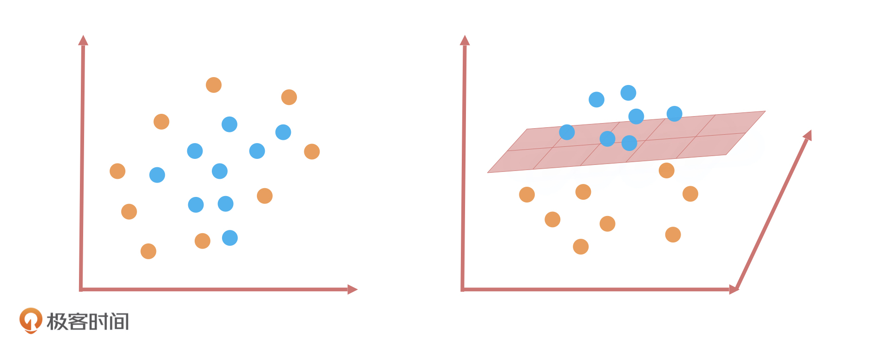
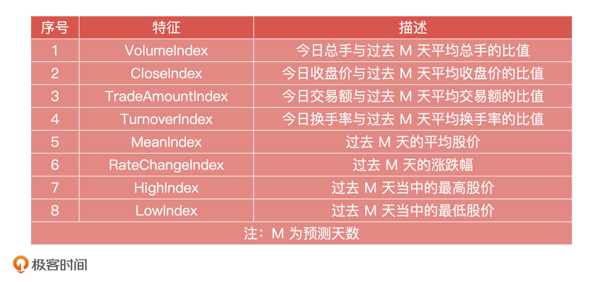

- 00 开篇词 你好，产品经理！你的未来价值壁垒在哪儿？.md.html
- 01 行业视角：产品经理眼中的人工智能.md.html
- 02 个人视角：成为AI产品经理，要先搞定这两个问题.md.html
- 03 技术视角：AI产品经理需要懂的技术全景图.md.html
- 04 过来人讲：成为AI产品经理的两条路径.md.html
- 05 通过一个 AI 产品的落地，掌握产品经理工作全流程.md.html
- 06 AI 模型的构建过程是怎样的？（上）.md.html
- 07 AI模型的构建过程是怎样的（下）.md.html
- 08 算法全景图：AI产品经理必须要懂的算法有哪些？.md.html
- 09 K近邻算法：机器学习入门必学算法.md.html
- 10 线性回归：教你预测，投放多少广告带来的收益最大.md.html
- 11 逻辑回归：如何预测用户是否会购买商品？.md.html
- 12 朴素贝叶斯：让AI告诉你，航班延误险该不该买？.md.html
- 13 决策树与随机森林：如何预测用户会不会违约？.md.html
- 14 支持向量机：怎么预测股票市场的涨与跌？.md.html
- 15 K-means 聚类算法：如何挖掘高价值用户？.md.html
- 16 深度学习：当今最火的机器学习技术，你一定要知道.md.html
- 17 模型评估：从一个失控的项目看优秀的产品经理如何评估AI模型？.md.html
- 18 核心技能：产品经理评估模型需要关注哪些指标？.md.html
- 19 模型性能评估（一）：从信用评分产品看什么是混淆矩阵？.md.html
- 20 模型性能评估（二）：从信用评分产品看什么是KS、AUC？.md.html
- 21 模型性能评估（三）：从股价预测产品看回归算法常用的评估指标.md.html
- 22 模型稳定性评估：如何用PSI来评估信用评分产品的稳定性？.md.html
- 23 模型监控：产品经理如何建设算法模型监控指标体系？.md.html
- 24 推荐类产品（一）：推荐系统产品经理的工作职责与必备技能.md.html
- 25 推荐类产品（二）：从0打造电商个性化推荐系统产品.md.html
- 26 预测类产品（一）：用户复购意向预测的底层逻辑是什么？.md.html
- 27 预测类产品（二）：从0打造一款预测用户复购意向的产品.md.html
- 28 预测类产品（三）：从0打造一款“大白信用评分产品”.md.html
- 29 自然语言处理产品：从0打造一款智能客服产品.md.html
- 30 AI产品经理，你该如何提升自己的价值？.md.html
- 31 AI产品经理面试，这些问题你必须会答！.md.html
- 春节加餐1 用户增长模型：怎么利用AI技术判断新渠道性价比？.md.html
- 春节加餐2 一次答疑，带你回顾模型评估的所有基础概念.md.html
- 期中周测试题 ，你做对了吗？.md.html
- 期中答疑 AI产品经理热门问题答疑合集.md.html
- 结束语 唯一不变的，就是变化本身！.md.html
- 捐赠
14 支持向量机：怎么预测股票市场的涨与跌？
你好，我是海丰。
不知道你有没有听过一个小故事，一个学渣和一个学霸考了同一张试卷，学渣考了 98 分，是因为他只能考 98 分，学霸考 100 分，是因为卷子只有 100 分。用这个故事中的学霸来形容我们今天要讲的这个算法一点也不过分，这个算法可以说是机器学习分类算法的天花板了。
它就是用来解决分类问题的支持向量机（Support Vector Machine，SVM）算法，简称SVM 算法。在深度学习模型“横行天下”的今天， SVM因为相比于深度神经网络更为轻量级，也有极好的性能，所以在工业界，它一般会作为模型效果的基准线。
这节课，我们就来聊一聊SVM的原理、应用和优缺点。
如何理解SVM算法？
我们先来做一道题：假如，桌子上放了两种颜色的球，你要用一根木棍把它们分开，你会怎么做呢？

如上图所示，我用了两种方式把它们分开了。这两种分类方式看起来差别不大，因为它们应用在这些数据集上的效果都一样，都可以完美分开两种颜色的球。
好， 现在我们加大难度，在这个基础上加上两个红色的样本点。如下图中的两个红色球，它们一个距离图中左下方的橙色球更近，另一个距离右上方的蓝色球更近。

如果我们还是用刚才的分类算法，这一回的效果就完全不同了。为什么这么说呢？在第11讲我们学过， KNN 算法通常是用距离公式（如欧式距离）去衡量两个样本之间的相似度，距离越近表示它们越相似。根据这个原理，我们就能得到一个结论：靠近橙色球的样本大概率属于橙色球，靠近蓝色球的样本大概率属于蓝色球。这样一来，做对这道题的就只有右边的分类算法。

那为什么只有它做对了这道题呢？我们可以看到，相比于第一个分类算法，第二个分类算法在完美区分所有样本点的同时，还在努力保证边界样本点到这个分类算法的决策边界的距离尽可能远，这就意味着两个分类样本之间的距离会被放大。根据距离公式，距离远表示相异，所以这两个分类样本的区分度会更高。
这个分类方法立于不败之地的原因，用一句话总结就是：在保证了分类正确性的同时，还尽可能让两个样本的类别更容易区分。简单来说就是，不仅做对了，还保证了质量。
SVM算法的原理
我刚才说的划分橙色和蓝色小球的方法就是SVM的算法思路：当样本数据是线性可分（用一条直线可以将样本数据分开）的时候，找到距离两类样本间隔最大的一条线，或者说是两类样本数据之间的中轴线。因为有无数条线可以区分两个分类，只有它们之间的中轴线距离所有样本点的距离最远。
其中，距离这条直线最近的几个样本点（如上面例子中的几个橙色和蓝色小球），就叫做支持向量（Support Vector），这几个点到这条线的距离称为间隔。
那为什么一定要找到间隔最大的这条直线呢？它除了能让分类样本的区分度最高，还有一个好处，就是当新数据发生波动的时候，就算超过了原有数据样本点的最近边界，分类结果仍然不会受到影响。因此，寻找最大间隔的过程也是 SVM 算法最优化参数的过程。

如何处理非线性可分？
但是，我们也知道现实情况中，很多数据是线性不可分的，就比如橙色和蓝色的球均匀地混合在了一起。这个时候，我们找不到一条直线可以把两种小球很好地分类。在这种情况下，SVM 又是怎么解决的呢？
SVM 的解决办法就是将二维平面映射到三维空间，我们可以想象成是把二维平面中的直线通过在三维空间上的投影构造出一个平面。这个平面把原有的空间分割成为了两部分，让两种颜色的小球样本在高维空间中线性可分。当然，我们也可以在平面的基础上延伸，比如映射到一个超过三维的空间，这就构造出了一个超平面。这种数学思路是 SVM 算法最优秀的地方，也是SVM和其他线性算法最大的区别。

总之，线性分类算法都可以叫线性分类器，它在二维空间中是直线，在三维空间是平面，在三维以上的空间维度是超平面。
在讲SVM解决办法的时候，我们还有一个问题没有解决：SVM 是怎么把分类器从二维平面映射到高维空间的呢？其实就是通过“核函数”来实现的，核函数的作用简单来说就是把低维空间映射到高维空间，常见的核函数有线性核函数、高斯核函数等等。因此， SVM 就是通过核函数将样本从原始空间映射到一个更高维的特质空间中，让样本数据在新的空间中线性可分。
总的来说，SVM 是一个有监督的二分类器，目标是找到一个超平面，让两类数据距离这个超平面最远，从而对新的数据分类更准确。
应用场景：预测股票市场的涨与跌？
假设，我们现在需要预测股票市场的涨和跌。因为，SVM 通过核函数能够方便地处理高维数据，而且，它通过少量的支持向量就可以进行决策，预测效率非常高，所以，我们决定通过 SVM 算法找到一套解决方案。
同时，我们希望这个方案还能应用在一些典型的个股股票的预测场景中，能够根据股票的若干特征样本数据，把待预测的目标结果划分成“涨”和“跌”两种，从而实现预测股票涨跌的效果。
首先，我们对模型进行设计，第一步是设定模型的目标变量。
因为要预测的是股票涨跌，所以我们首先想到的就是预测未来一些天的股票价格是增长还是下降，但是，除非这个结果具有非常高的正确率，否则这种预测对于实际投资就没有太大的指导意义。
但是，如果我们能够描绘出未来一些天股票价格的走势或者说是股票价格曲线的大致形状，就算它预测出的股票价格与实际股票价格有一定的出入，这对股票投资来说也会有很大的指导意义。因此，我们的目标变量就是未来一些天个股的“涨”和”跌”走势。
然后就是确定数据样本。我们会从历史个股在市场交易环节的数据表现中进行抽取，并且确定算法选型为 SVM 支持向量机。
在模型设计完成之后，我们就要建立特征工程了。模型里所用到的输入特征数据是由股票基础指标计算得出，这些指标分别是前收盘价、开盘价、最高价、最低价、均价、成交量、成交额、涨跌、涨跌幅、换手率、收盘价。我们会根据这些指标构造出 8 个特征向量，这些指标一般和股价具有较强的相关性，特征向量如下：

在构建完特征工程后，就进入模型训练的环节了。在这个阶段，算法工程师会选择核函数进行训练，如果是线性数据，就选线性核函数的 SVM 分类器，否则就选高斯核函数的 SVM 分类器。在预测股票涨跌的例子中，算法工程师就会选择高斯核函数的 SVM 分类器，然后对训练好的模型用测试集进行评估。
最后，我们把计算得出的结果绘制成股票的价格曲线，通过对比真实与预测行情的走势，以可视化的方式直观地检验模型预测结果是否达到效果。
SVM算法优缺点
SVM 算法作为机器学习领域非常强大的算法，SVM 算法作为机器学习领域中非常强大的算法，首当其冲的优点就是，它不仅适用于线性问题，还适用于非线性问题。因此，SVM 对高维数据集和低维数据集都有不错的表现，它可以在数据特征很少的情况下生成非常复杂的决策边界。当然，在特征数量足够多的情况下效果更好，原因是数据集的复杂度只取决于支持向量而不是数据集的维度。
并且，相比于 KNN、决策树这些局部最优解的算法来说，SVM 可以求得一个全局的最优解。
但是，SVM 的缺点就是训练所需要的资源很大。由于运算量与存储量都很高，SVM 训练会非常消耗时间和内存。因此支持向量机比较适合小的样本量，比如几千条数据，当样本量太大的时候，训练资源开销就会过大。而且，SVM 无法直接解决多分类问题，只能通过多个二分类支持向量机的组合来解决。
总结
今天，我借助预测股票涨跌的例子给你讲了 SVM 支持向量机的核心原理、应用场景以及优缺点。
对于 SVM 的原理，你可以分两方面来理解，我还是用小球举例：
当小球数据是线性可分的时候，SVM 的思路就是要找到距离两种小球间隔最大的那条线；
当小球数据是线性不可分的时候，SVM 的做法就是通过核函数把小球映射到高维空间中，构造出一个超平面，让小球样本在高维空间中线性可分。
在深度学习模型还没有火起来之前，SVM 算法可以说是分类算法的天花板了，尤其在文本分类场景下效果表现非常好，比如情感分析、短文本分类等等。那么，即使在深度学习模型应用这么广泛的今天，无论我们选择哪个深度学习算法，它的效果也一定要以SVM 算法的效果为基准线。
关于SVM的优缺点，我们要知道，SVM 可以解决线性问题，又可以解决非线性问题，同时，它可以求出一个全局最优解。但是，SVM 训练资源开销比较大，所以适合应用在小样本量的数据分类中，而且它只能通过多个二分类的组合，来间接解决多分类问题。
课后讨论
结合我们学过的知识，对于 SVM 和 LR来说，你觉得哪些情况下适合选用 SVM，哪些情况下适合选用 LR？为什么？
欢迎在留言区分享你的观点和疑惑，也欢迎你把这节课分享给你的朋友，我们下节课见!
© 2019 - 2023 Liangliang Lee. Powered by gin and hexo-theme-book.